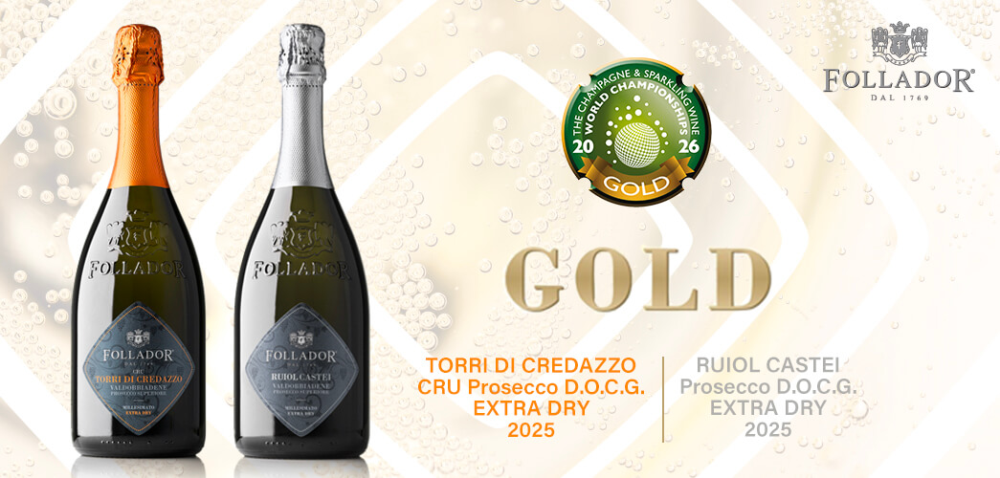

The international recognition at the competition founded by Tom Stevenson and the selection for one of Italy’s leading wine guides celebrate the Follador family’s journey.
We are delighted to announce two prestigious achievements that further confirm the standing of our wines on both the national and international wine scene. Our winery has won two Gold Medals at the Champagne & Sparkling Wine World Championships 2026 (CSWWC), the international competition dedicated to sparkling wines founded by British critic Tom Stevenson, and has been selected for the Essential Guide to Italian Wines 2027, curated by Doctor Wine, one of the leading references in the Italian wine world.
“These results, achieved within a short time of one another, represent an important confirmation for us. Receiving Gold at such a high-level international competition and being selected by the Doctor Wine Guide means that, once again, the quality of our work and the identity of our wines are being recognised, both in Italy and in international markets. These are achievements that fill us with pride and encourage us to continue investing in research and in promoting the wines of Conegliano Valdobbiadene,” says Cristina Follador, who leads the winery together with her siblings Michele, Emanuela and Francesca.
The international competition, considered one of the world’s most authoritative events in the sparkling wine sector, stands out for its judging panel, which brings together some of the leading global experts in the category: founder Tom Stevenson, regarded as one of the foremost international authorities on sparkling wine; Master of Wine Essi Avellan; and wine critic George Markus.
The competition awarded Gold Medals to Ruiol Castei Valdobbiadene Prosecco Superiore DOCG and Torri di Credazzo Cru Valdobbiadene Prosecco Superiore DOCG, both from the 2025 vintage, while Nani dei Berti Rive di Col San Martino Valdobbiadene Prosecco Superiore DOCG 2025 received a Bronze Medal. The CSWWC 2026 awards ceremony will be held on 29 October at Merchant Taylors’ Hall in London.


Alongside this international success comes the winery’s inclusion in the 2027 Guide, edited by Daniele Cernilli. Now in its thirteenth edition and regarded as one of the leading reference points for Italian wine, the guide has selected Follador dal 1769 among the country’s distinctive wine producers, recognising its consistent quality and production excellence.
The success at the CSWWC and inclusion in the Doctor Wine Guide further strengthen the journey that Follador dal 1769 has pursued over generations, founded on the Gianfranco Follador® Method and on a vision that combines family tradition with technical innovation, enabling the winery’s wines to stand out both in Italy and on international markets.